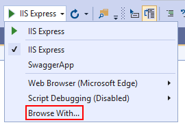

testing with httprepl
Overview
- HttpRepl (Read-Eval-Print-Loop) is a command line tool used to make HTTP requests to test web APIs and view their results.
- It can test web APIs hosted anywhere, including localhost and Azure App Service.
- Documentation: https://learn.microsoft.com/en-us/aspnet/core/web-api/http-repl/?view=aspnetcore-7.0&tabs=windows
Installation
dotnet tool install -g Microsoft.dotnet-httprepl
Usage
Connecting to a web API
httprepl ROOT_URI [--verbose]
Example:
httprepl https://localhost:5001
Alternatively, after HttpRepl is running:
> connect ROOT_URI
The above commands attempt to find the OpenAPI description automatically. If it cannot be found, specify it:
> connect ROOT_URI --openapi OPENAPI_DESCRIPTION_ADDRESS # like /swagger/v1/swagger.json
Navigating a web API
- View endpoints:
ls - Navigate to an endpoint:
cd ENDPOINT - Open Swagger UI page:
ui
Making HTTP Requests
Configuring Requests
Headers can be set before sending requests:
> set header HEADER-NAME HEADER-VALUE
To unset a header, provide an empty HEADER-VALUE.
GET requests
Send a GET request once you are in an endpoint:
> get PARAMETER [OPTIONS]
Options:
- Set an HTTP request header:
--header HEADER=VALUEorHEADER:VALUE - Set the file where HTTP response body is written:
--response:body "C:\response.json" - Set the file where HTTP response headers are written:
--response:headers "C:\response.txt" - Stream the HTTP response:
--streaming
POST requests
Send a POST request:
> post PARAMETER [OPTIONS]
POST requests have the same options as GET requests, and also:
- Provide an inline HTTP request body:
--content {\"id\":2,\"name\":\"Cherry\"}" - Provide a path to a file containing the HTTP request body:
--file "C:\request.json" - Indicate that no HTTP request body is needed:
--no-body Note : if none of the above 3 options are passed, HttpRepl opens the text editor for you to manually input the request body
PUT requests
> put PARAMETER [OPTIONS]
Options for PUT match those of POST.
DELETE requests
> delete PARAMETER [OPTIONS]
Options for DELETE match those of GET.
PATCH requests
> patch PARAMETER [OPTIONS]
Options for PATCH match those of POST.
HEAD requests
> head PARAMETER [OPTIONS]
Options for HEAD match those of GET.
OPTIONS requests
> options PARAMETER [OPTIONS]
Options for OPTIONS match those of GET.
Configuring HttpRepl
Once modified, preferences are stored in %USERPROFILE%\.httpreplprefs
- View settings:
pref get
Configuring Output
- Set colors:
pref set colors.KEY=COLOR - Set indent space sizing:
pref set formatting.json.indentSize 4 - Toggle request display (default=disabled):
echo on|off
Configuring Text Editor
- Set default text editor:
pref set editor.command.default "C:\Program Files\Microsoft VS Code\code.exe" - Set command line arguments to launch text editor with:
pref set editor.command.default.arguments "--ARGUMENT-1 --ARGUMENT-2"
Configuring OpenAPI Description Search Paths
- Set search paths:
pref set swagger.searchPaths "swagger/v2/swagger.json|swagger/v3/swagger.json" - Add one or more paths:
pref set swagger.addToSearchPaths "openapi/v2/openapi.json|openapi/v3/openapi.json" - Remove one or more paths:
pref set swagger.removeFromSearchPaths "swagger.json|/swagger.json"
Configuration for Secured Endpoints
For default credentials (credentials of the user running the tool flow across to the endpoints being tested):
> pref set httpClient.useDefaultCredentials true
> exit
httprepl
For default proxy credentials (credentials of the user running the tool flow to the proxy):
> pref set httpClient.proxy.useDefaultCredentials true
> exit
httprepl
Scripts
Sets of HttpRepl commands can be stored in text files and run as a script:
SomeScript.txt
set base https://localhost:5001
ls
cd People
ls
get 1
Run the script:
> run C:\SomeScript.txt
Configuring Visual Studio to Run HttpRepl on F5


Select HttpRepl after adding it:

Configuring Visual Studio Code to Run HttpRepl on Debug
Create a launch configuration:
"version": "0.2.0",
"compounds": [
{
"name": ".NET Core REPL",
"configurations": [
".NET Core Launch (web)",
"httprepl"
]
}
],
"configurations": [
{
"name": "httprepl",
"type": "coreclr",
"request": "launch",
"program": "dotnet",
"args": ["httprepl", "http://localhost:5000"],
"cwd": "${workspaceFolder}",
"stopAtEntry": false,
"console": "integratedTerminal"
},
{
"name": ".NET Core Launch (web)",
"type": "coreclr",
"request": "launch",
"preLaunchTask": "build",
// If you have changed target frameworks, make sure to update the program path.
"program": "${workspaceFolder}/bin/Debug/netcoreapp3.0/api.dll",
"args": [],
"cwd": "${workspaceFolder}",
"stopAtEntry": false,
// Enable launching a web browser when ASP.NET Core starts. For more information: https://aka.ms/VSCode-CS-LaunchJson-WebBrowser
"serverReadyAction": {
"action": "openExternally",
"pattern": "^\\s*Now listening on:\\s+(https?://\\S+)"
},
"env": {
"ASPNETCORE_ENVIRONMENT": "Development"
},
"sourceFileMap": {
"/Views": "${workspaceFolder}/Views"
}
}
Telemetry
HttpRepl collects telemetry. Set DOTNET_HTTPREPL_TELEMETRY_OPTOUT to 1 or true to opt out.